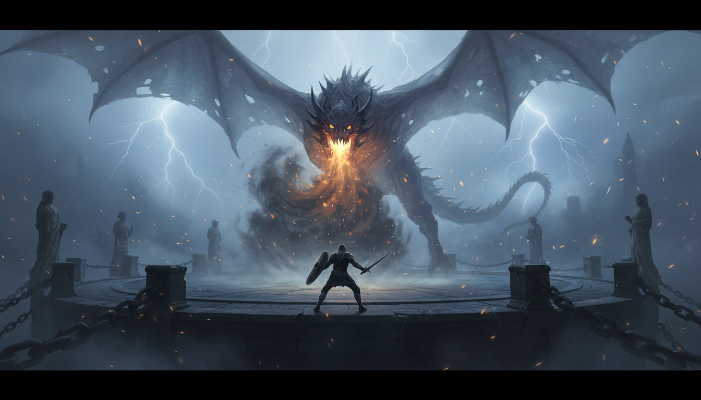

Trayectoria y Pasión
Soy estudiante de Ingeniería en Sistemas Computacionales con una trayectoria marcada por la curiosidad tecnológica. A mis 42 años, este blog representa la culminación de un ejercicio académico en la materia de Desarrollo de Aplicaciones en Red, donde he aplicado mis conocimientos en arquitectura web y diseño UI.
Mi relación con el mundo digital comenzó a los 6 años. Lo que inició como un simple pasatiempo frente a una pantalla, evolucionó en una comprensión profunda de los sistemas y las narrativas complejas, encontrando en el género Soulslike la metáfora perfecta para la ingeniería: análisis, paciencia y resolución de problemas.
Habilidades Técnicas
A lo largo de este proyecto, he consolidado el manejo de:
- Maquetación semántica con HTML5.
- Diseño de interfaces y experiencia de usuario con CSS3.
- Generación de imagenes digitales mediante Inteligencia Artificial.
